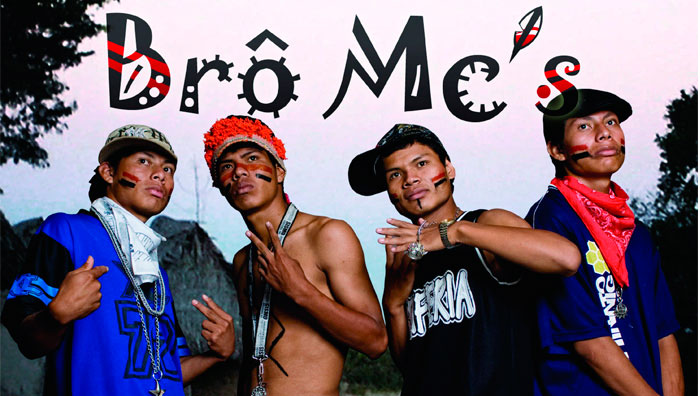

Índios na Atualidade
A situação dos indígenas no Brasil vem de inúmeras características e eventos históricos ocorridos na história de nosso país. O processo de colonização e a industrialização tiveram grande influência no modo de vida e na visão em relação aos índios.
Desde o descobrimento do Brasil os povos indígenas sofreram repressão. Inúmeros foram mortos, escravizados ou catequizados. Desse modo, sua cultura foi reprimida e muito se perdeu nesse tempo.
Vindo para a atualidade, a intensa construção de rodovias e de hidrelétricas, o constante crescimento de indústrias, áreas para plantio, garimpos e madeireiras fizeram com que os indígenas tivessem seu espaço total reduzido e os problemas aumentados, pois a relação das tribos com a terra é direta, sem ela não há vida. Como resultado dessas interferências, a vida indígena passou a ser enclausurada em poucos espaços de terra, modificando totalmente o modo de vida das tribos e, por consequência, modificando sua cultura original.
Como resultado dessas interferências, a vida indígena passou a ser enclausurada em poucos espaços de terra, modificando totalmente o modo de vida das tribos e, por consequência, modificando sua cultura original.
Outro ponto a ser estudado é a falta de amparo dessas comunidades pelo governo. Frequentemente, vemos notícias sobre pedágios cobrados por índios em rodovias, mas, nessas mesmas notícias, não aparecem suas motivações. Em uma entrevista com índios que cobravam pedágio em uma rodovia em Juína, descobriu-se que eles estavam fazendo isso para comprar remédios e comida para as crianças e doentes de sua aldeia, a qual está passando por muitas dificuldades. Um ponto que vale ser ressaltado é que justamente essa rodovia passava no meio de uma área reservada aos indígenas.
Entre os indígenas, os casos de alcoolismo, suicídio e desnutrição infantil são frequentes. O caso do alcoolismo ocorre pela perda de sua identidade indígena, do ego cultural e de sua ociosidade, pois sem acesso ao estudo e, consequentemente, ao mercado de trabalho, não conseguem empregos e ficam ociosos. Esses fatores causam índices de depressão entre os indígenas e a aquisição desse vício, pois a bebida não é de difícil acesso com alambiques dentro das tribos indígenas. Os casos de suicídios tem a mesma motivação dos casos de alcoolismo e a desnutrição ocorre pelo fato de que os pais, gastando dinheiro com bebidas alcoólicas, não compram alimento para seus filhos ou não dão os cuidados necessários para as crianças.
No Estatuto do Índio (lei de nº 6.001, de 1973) está assegurado o direito à educação, terras, saúde e todos os outros direitos que um cidadão comum tem, mas com as devidas modificações para não agredir os padrões sociais e culturais dos índios. No entanto, esta lei não é sempre cumprida. Em Mato Grosso do Sul, ocorreu um ataque de produtores rurais e funcionários da região à indígenas, gerando um conflito armado no qual um indígena foi morto e mais cinco foram feridos.
Se nos voltarmos para a imagem que a mídia nos passa dos índios, falaremos somente de características pejorativas e uma visão totalmente unilateral. Como já citado, na questão dos pedágios suas motivações nunca são ditas, somente os transtornos que estão causando. Isso ocorre pois os índios "atrapalham" a sede constante de lucros dos grandes empresários (com as madeireiras e garimpos, por exemplo) e também reivindicam seus direitos de modo não muito justo na visão da população. Porém, a injustiça que eles sofrem raramente é exposta.
Como dito, os indígenas têm direito a terras reservadas. Isso está previsto no Estatuto do Índio e na própria Constituição. Além do fato de ser um direito garantido à eles e de se tratar da conservação de uma cultura muito rica e antiga, essas reservas indígenas também ajudam na preservação da natureza e das diversas espécies de animais.
Ainda no âmbito da delimitação de terras, há uma tese política chamada de marco temporal. Essa tese defende que apenas as terras que estavam na posse dos Índios a partir de 5 de outubro de 1988 sejam parte das áreas reservadas aos mesmos. Essa é uma medida totalmente injusta e inconstitucional, pois ao fazer isso torna legítima a retirada de toda a terra original e toda a violência por eles sofrida até 4 de outubro de 1988. Não querendo o Brasil inteiro, a comunidade indígena quer somente suas terras tradicionais, que seriam demarcadas seguindo os critérios de tradição amparados pela Constituição. Além destas questões, os índios recebem influência direta de nós e isso modifica totalmente sua cultura. O uso das novas tecnologias parece apenas mais um fator para afastá-los de sua originalidade cultural à primeira vista, principalmente com a troca de informações constante que esses aparelhos proporcionam. No entanto, há tribos indígenas que estão usando as novas tecnologias para divulgar ainda mais suas tradições, podendo alcançar o mundo inteiro com a internet. Como exemplo, as tribos Bororo, Caiapó e Xavante participaram de um encontro que reuniu várias escolas. Nesse encontro, divulgaram sua cultura e costumes para diversos jovens. Além desses encontros, essas e outras tribos também usam da tecnologia de câmeras e filmadoras para a produção de materiais sobre suas vidas, um exemplo disso é o grupo de rap indígena chamado Brô MC's. Visitas restritas e previamente marcadas também podem ser feitas nas aldeias, não atrapalhando assim seu cotidiano.
Além destas questões, os índios recebem influência direta de nós e isso modifica totalmente sua cultura. O uso das novas tecnologias parece apenas mais um fator para afastá-los de sua originalidade cultural à primeira vista, principalmente com a troca de informações constante que esses aparelhos proporcionam. No entanto, há tribos indígenas que estão usando as novas tecnologias para divulgar ainda mais suas tradições, podendo alcançar o mundo inteiro com a internet. Como exemplo, as tribos Bororo, Caiapó e Xavante participaram de um encontro que reuniu várias escolas. Nesse encontro, divulgaram sua cultura e costumes para diversos jovens. Além desses encontros, essas e outras tribos também usam da tecnologia de câmeras e filmadoras para a produção de materiais sobre suas vidas, um exemplo disso é o grupo de rap indígena chamado Brô MC's. Visitas restritas e previamente marcadas também podem ser feitas nas aldeias, não atrapalhando assim seu cotidiano.
Além destas coisas, caminhonetes, smartphones e até computadores são fornecidos pelo governo para ajudar na inclusão das aldeias, como no caso dos índios Yanomami que queriam ter aulas de informática com o intuito de fortalecer sua cultura (criando conteúdos sobre sua vida), organizar suas atividades (criando documentos e tabelas) e contatar as autoridades com mais facilidade (por meio do envio de mensagens por qualquer tipo de rede). Para essa tarefa foram necessários os equipamentos (computadores e placas solares) e também o dinheiro para professores e alunos se locomoverem até a região (que era muito longe da cidade) e cobrirem os gastos com alimentação. Foram necessárias doações para arrecadar o dinheiro e equipamentos.
Fontes:
https://bit.ly/2O5JYWq
https://bit.ly/2TwqyK6
https://bit.ly/2DQZiBC
https://bit.ly/1DG1vZA
https://bit.ly/2FzH4Gh
https://bit.ly/2TwqyK6